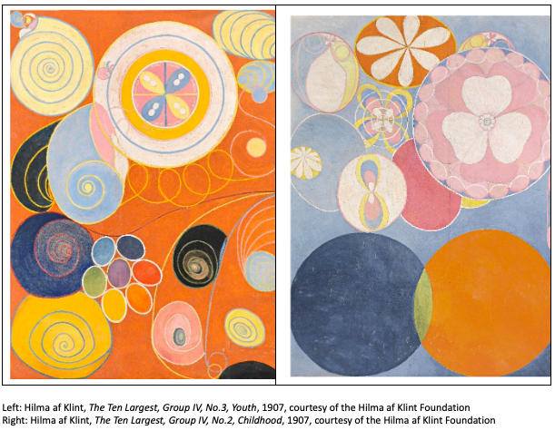
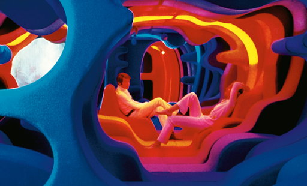
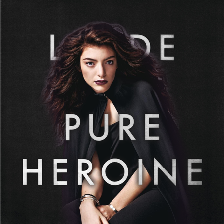

My name is Jenny Agagas
These are some of the artist who inspire me:
Hilma af Klint

Hilma af Klint was a Swedish pioneer of abstract art, creating vibrant, intricate paintings influenced by spiritualism.
She is celebrated for her visionary contributions to abstract art.
Verner Panton

Verner Panton was a Danish architect and designer known for his innovative and futuristic approach to furniture and interior design.
Panton's work often featured bold colors, organic shapes, and unconventional materials.
Lorde

Lorde is a New Zealand singer acclaimed for her unique voice and genre-blending pop. She is known for her distinctive style and thoughtful lyrics.
She has received multiple awards for her innovative contributions to music.